조경산업기사 (2016-03-06 기출문제)
1과목: 조경계획 및 설계
1. 팩스턴(Paxton)의 이름을 높여 준 작품은?
- 시뵈베르원
- 수정궁
- 큐 가든
- 켄싱턴원
(정답률: 74%)

2. 일본정원 중 선종(禪宗)의 영향을 가장 크게 받은 시대는?
- 아즈카(비조)시대
- 무로마찌(실정)시대
- 에도(강호)시대
- 모모야마(도산)시대
(정답률: 70%)
3. 조선시대 민가정원의 지당형태를 잘못 설명한 것은?
- 지당내 섬에는 목본식물이 식재된다.
- 지당의 윤곽선은 직선적으로 처리된다.
- 지당 가운데는 1~3개의 섬이 조성된다.
- 지당 내부의 섬을 연결하는 곡교(曲橋)가 조성된다.
(정답률: 64%)
4. 조선시대 궁궐정원 시설이 아닌 곳은?
- 통명전
- 향원정
- 교태전
- 연복정
(정답률: 69%)
5. 고대 메소포타미아 지방에 만들어졌던 파크(Park)에 관한 설명으로 가장 적합한 것은?
- 사막지대에 정형식으로 조성된 궁원이다.
- 신전을 중심으로 하여 조성한 신림(神林)이다.
- 왕의 수렵(狩獵)놀이를 주목적으로 하여 조성한 숲이다.
- 왕의 소유이지만 일반사람들에게도 공개되는 오늘날의 공원과 같은 것이다.
(정답률: 82%)
6. 선 왕릉의 공간은 능침, 제향, 진입공간으로 구성되어 있다. 다음 중 제향공간에 속하지 않는 것은?
- 곡장
- 정자각
- 수라간
- 수복방
(정답률: 64%)
7. 다음 중 부울리바아드(boulevard)가 의미하는 것은?
- 어린이 놀이터
- 삼림욕을 할 수 있는 숲
- 나무가 줄지어 심어진 유보도(遊步道)
- 도시 가운데에 있는 벤치가 놓인 공원(公園)
(정답률: 77%)
8. 다음 제시된 평면기하학식 정원의 조성 시기가 가장 빠른 정원은?
- 베르사이유(Versailles) 궁원
- 카르스루헤(Karsruhe) 성
- 보르비콩트(Vaux-Le-Viconte)
- 헤렌하우젠(Herrenhauzen) 궁
(정답률: 86%)
9. Litton의 삼림경관의 유형과 그 설명이 틀린 것은?
- 관개경관 : 터널적 경관이라고도 불리며 수관 아래나 임내의 경관
- 파노라믹 경관 : 시선을 가로막는 장애물이 없이 풍경을 조망할 수 있는 경관
- 위요경관 : 기준면(바닥)을 지면 또는 수평이나 초원으로 하여 주위의 경관요소들이 울타리처럼 자연스럽게 싸고 있는 국소적 경관
- 세부경관 : 평행선의 연속이나 경관요소들이 직선상으로 연결됨으로써 시선은 어느 점을 따라 유도되는 현상의 경관
(정답률: 79%)
10. 프로그램이란 설계시 필요한 요소와 요인들에 대한 목록과 표를 말하는데, 이 프로그램의 구성은 세 가지로 이루어진다. 다음 중 구성 요소로 가장 보기 어려운 것은?
- 설계 비용
- 설계 목적과 목표
- 설계상의 특별한 요구사항
- 설계에 포함되어야 할 요소들의 목록
(정답률: 85%)
11. 우리나라「도시ㆍ군계획시설의 결정ㆍ구조 및 설치기준에 관한 규칙」상의「교통광장」의 분류에 해당하지 않는 것은?
- 교차점광장
- 중심대광장
- 주요시설광장
- 역전광장
(정답률: 61%)
12. 다음 중 생태숲 계획시 고려할 사항으로 가장 부적합한 것은?
- 건설사업으로 인한 산림의 훼손지복원이나 이용객들의 치유목적 및 자연학습장으로 이용 가능한 숲의 조성에 적용한다.
- 오염되거나 훼손된 도시산업화 지역에서 환경보전 및 자연성 증진 기능을 수행 할 수 있도록 조성하는 다층복합구조의 숲 조성에 적용한다.
- 생태라는 개념을 도입하여 자연이 갖는 생태적 기능을 강조함과 동시에 일반인의 관심과 흥미를 유도할 수 있는 숲을 말한다.
- 50만 제곱미터 이상(자연휴양림ㆍ도시숲 등과 연접하여 교육ㆍ탐방ㆍ체험 등의 기능을 높일 수 있는 경우에는 30만제곱미터 이상)인 산림을 대상으로 지정할 수 있다.
(정답률: 78%)
13. 아파트 단지계획에 있어서 다음 그림은 무엇을 가장 잘 표현한 것인가?
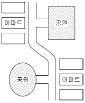
- 녹지 속에 아파트가 파묻혀 있도록 계획한 것
- 완충녹지를 조성하여 그 곳에 공원을 계획한 것
- 주거동으로 포위된 넓은 공간을 공원적 성격을 지닌 다목적인 자리로 계획한 것
- 동선의 흐름에 따라 성격을 달리한 공원을 계획하여 공간이용의 다양화를 도모한 것
(정답률: 87%)
14. 대지(垈地)조건에 가장 적합한 토지의 용도를 찾고 정지 작업하기 위한 절ㆍ성토량을 계산하여 적절한 사면 처리 방법을 강구하기 위한 대지 조사 작업은?
- 토지이용 조사
- 경사도 분석
- 토양조사
- 인공구조물 조사
(정답률: 79%)
15. 다음 중 조경설계기준상의 「보행등」에 관한 설명으로 틀린 것은?
- 보행로 경계에서 1,000mm 정도의 거리에 배치한다.
- 소로ㆍ산책로ㆍ계단ㆍ구석진 길ㆍ출입구ㆍ장식벽 등에 설치한다.
- 보행인의 이용에 불편함이 없는 밝기를 확보하며, 보행로의 경우 3lx 이상의 밝기를 적용한다.
- 산책로 등의 보행공간만을 비추고자 할 경우에는 포장면 속에 배치하거나 등주의 높이를 50~100㎝로 설계한다.
(정답률: 72%)
16. 정투상도에 의한 제1각법으로 도면을 그릴 때 도면 위치로 맞는 것은?
- 정면도를 중심으로 평면도가 위에, 우측면도는 정면도의 왼쪽에 위치한다.
- 정면도를 중심으로 평면도가 위에, 우측면도는 정면도의 오른쪽에 위치한다.
- 정면도를 중심으로 평면도가 아래에, 우측면도는 정면도의 오른쪽에 위치한다.
- 정면도를 중심으로 평면도가 아래에, 우측면도는 정면도의 왼쪽에 위치한다.
(정답률: 68%)
17. 다음 색채의 일반적인 성질 중에서 보색 관계는?
- 한색과 난색
- 청색과 탁색
- 유채색과 무채색
- 고명도와 저명도
(정답률: 73%)
18. 다음 도시공원 및 녹지 등에 관한 법률 시행규칙의 도시공원의 면적기준 설명의 “B"에 적합한 수치는?
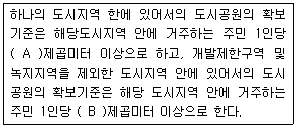
- 2
- 3
- 6
- 10
(정답률: 72%)
19. 다음 수종 중 멀리서 조망하였을 때 잎이 주는 질감이 가장 부드러운 것은?
- 버즘나무
- 상수리나무
- 해송
- 낙우송
(정답률: 70%)
20. 조경제도에서 불규칙한 곡선을 그릴 때 사용하기 가장 적합한 제도 용구는?
- 삼각자
- 스케일
- 자유곡선자
- 만능제조기
(정답률: 93%)
2과목: 조경식재
21. 다음 중 초화류의 식재간격(㎝)이 가장 큰 것은?
- 팬지
- 맨드라미
- 샐비어
- 꽃양배추
(정답률: 86%)
22. 받침줄(guy, 당김줄)을 사용해 지주할 때 주의 사항으로 틀린 것은?
- 나뭇가지를 감쌀 때 고무호스를 사용해야 한다.
- 받침줄은 가급적 금속재 앵카로 지지되어야 한다.
- 받침줄에 의해 힘이 분산될 때 평형상태가 되어야 한다.
- 받침줄은 조이기 위하여 가급적 턴버클을 사용하지 않는 것이 효과적이다.
(정답률: 79%)
23. 뿌리돌림 분의 크기를 정할 때 고려해야 할 조건으로 틀린 것은?
- 귀중한 수목은 크게 작업한다.
- 뿌리 발생력이 강한 수종은 작게 작업한다.
- 심근성 수종은 천근성보다 좁고 깊게 잡는다.
- 뿌리발생에 불리한 지형과 토양에서는 작게 작업한다.
(정답률: 62%)
24. 수(水) 처리에 이용되는 습지식물의 분류 중 침수식물에 해당하는 것은? (문제 오류로 실제 시험에서는 모두 정답처리 되었습니다. 여기서는 1번을 누르면 정답 처리됩니다.)
- 부들
- 가래
- 골풀
- 사초
(정답률: 87%)
25. 자귀나무의 학명으로 맞는 것은?
- Amorpha fruticosa
- Albizziz julibrissin
- Caragana sinica
- Cercis chinensis
(정답률: 80%)
26. 다음 중 같은 색의 꽃이 피는 수목으로 맞게 짝지어진 것은?
- Cornus controversa, Aesculus turbinata
- Cornus kousa, Lagerstroemia indica
- Cercis chinensis, Cornus officinalis
- Albizzia julibrissin, Chionanthus retusus
(정답률: 51%)
27. 다음 중 한 마디에 잎이 2개씩 달리는 대생(對生)하는 식물이 아닌 종은?
- 쥐똥나무
- 굴참나무
- 수수꽃다리
- 고로쇠나무
(정답률: 53%)
28. 훼손된 비탈면의 자연환경과 생태계를 복원하기 위한 성능 목표로 틀린 것은?
- 비탈침식의 조장
- 비탈면의 경관향상
- 종 다양성의 확보
- 주변 지역과의 조화
(정답률: 75%)
29. 다음 중 개화의 순서가 바르게 된 것은?
- 쥐똥나무 → 산수유 → 풍년화 → 금목서
- 풍년화 → 산수유 → 쥐똥나무 → 금목서
- 금목서 → 쥐똥나무 → 풍년화 → 산수유
- 풍년화 → 쥐똥나무 → 금목서 → 산수유
(정답률: 78%)
30. 다음 자연생육에서도 비교적 정형을 유지하는 수종들 중 전정으로서만 정형을 유지할 수 있는 수종은?
- 개잎갈나무
- 가이즈까향나무
- 낙우송
- 낙엽송
(정답률: 75%)
31. 단풍나무과(科)의 식물은 아름다운 단풍으로 계절감을 제공하는 대표적인 수종이다. 다음 중 단풍나무과 식물이 아닌 것은?
- 신나무
- 미국풍나무
- 중국단풍
- 네군도단풍
(정답률: 73%)
32. 수목식재시 자연토의 생존최소토심과 토양등급 중급 이상의 생육최소토심을 순서대로 열거한 것 중 틀린 것은?
- 심근성 교목 : 90㎝, 150㎝
- 천근성 교목 : 60㎝, 90㎝
- 소관목 : 45㎝, 60㎝
- 잔디ㆍ초화류 : 15㎝, 30㎝
(정답률: 78%)
33. 일반적인 식재지역의 토양조건 중 수목생육에 가장 좋은 토양 조건은?
- 산성 토양
- 풍화암 토양
- 점질 토양
- 중성이나 약산성 토양
(정답률: 80%)
34. 다음 방품림 구조의 설명으로 가장 거리가 먼 것은?
- 1.5~2.0m 간격의 정삼각형식재가 바람직하다.
- 수림대의 길이는 수고의 12배 이상이 필요하다.
- 지형과의 관계에서는 능선 또는 법견에 설치함이 좋다.
- 수림의 밀폐도는 90~95% 정도 유지되도록 하는 것이 필요하다.
(정답률: 62%)
35. 다음 식물에 관한 설명으로 틀린 것은?
- 건생식물에는 바위솔, 세덤류가 속한다.
- 소택식물에 있어 마름, 가래 줄 등의 정수 식물이 속한다.
- 중생식물은 적윤지 식물에 잘 자라는 식물로 온대낙엽활엽수가 속한다.
- 토양수분이 부족하여 잎의 원형질 분리가 일어나 시들기 시작하는 때를 초기위조점이라 한다.
(정답률: 61%)
36. 낙엽송은 개화가 매우 힘든 수종으로 알려져 있다. 개화결실을 촉진하기 위한 기술이 아닌 것은?
- 접목법
- 환상박피
- 조직배양법
- 지베렐린처리법
(정답률: 57%)
37. 다음 중 학명에 품종이 표기되지 않는 식물은?
- 반송
- 불두화
- 용버들
- 화살나무
(정답률: 64%)
38. 바람에 쓰러지기 쉬운 수종이 아닌 것은?
- 미루나무
- 아까시나무
- 갈참나무
- 양버즘나무
(정답률: 60%)
39. 조경수목 종자의 품질을 나타내는 기준인 순량율이 50%, 실중이 60ｇ, 발아율이 90%라고 할 때, 종자의 효율은?
- 27%
- 30%
- 45%
- 54%
(정답률: 66%)
40. 다음 중 낙상홍에 대한 설명이 아닌 것은?
- 과명이 감탕나무과이다.
- 학명은 Ilex cornuta 이다.
- 암수딴그루이다.
- 열매는 붉은색이다.
(정답률: 56%)
3과목: 조경시공
41. 다음 1/50,000 도면상에서 AB간의 도상수평거리가 10㎝일 때 AB간의 실 수평거리와 AB선의 경사를 구한 값은?
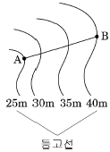
- 실수평거리 : 50m, 경사 : 1/3.3
- 실수평거리 : 500m, 경사 : 1/33.3
- 실수평거리 : 5,000m, 경사 : 1/333
- 실수평거리 : 50,000m, 경사 : 1/3333
(정답률: 72%)
42. 그림과 같은 외팔보에 등분포하중이 작용한다. 지점 C에서의 굽힘모멘트의 크기는 얼마인가?
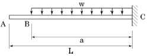
- ωa2/4
- ωa2/2
- ωa2
- 2ωa2
(정답률: 65%)
43. 기본벽돌을 사용하여 2.0B의 두께로 벽을 만들었을 때 벽 두께(mm)는? (단, 줄눈 두께는 1㎝로 한다.)
- 190
- 200
- 380
- 390
(정답률: 61%)
44. 다음 설명에 적합한 콘크리트의 종류는?
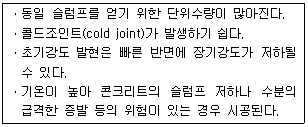
- 서중콘크리트
- 매스콘크리트
- 팽창콘크리트
- 한중 콘크리트
(정답률: 61%)
45. 배수지역의 표면 종류에 따른 유출계수가 가장 큰 곳은?
- 공원
- 상업지역
- 학교운동장
- 저밀도주거지역
(정답률: 73%)
46. 다음 설명하는 건설 장비는?
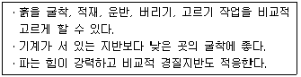
- Bulldozer
- Back Hoe
- Grader
- Drag line
(정답률: 72%)
47. 흙을 100m 거리로 리어카를 이용하여 운반하려한다. 운반로의 상태가 보통일 때 하루에 운반하는 흙은 몇 m3인가? (단, 흙 1m3은 1,800kg, 하루작업시간은 450분, 리어카의 1회 적재량은 250kg 이고, 적재 적하시간과 평균왕복운반속도는 다음 표와 같다.)
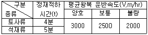
- 4.268
- 5.342
- 7.102
- 9.678
(정답률: 47%)
48. 다음 네트워크 공정표와 관련된 설명 중 틀린 것은?
- 작업을 나타내며 시간과 자원을 필요로 하는 부분을 Activity(작업, 활동)라고 한다.
- 작업의 종료, 개시 또는 작업과 작업간의 연결점을 Event(결합점)라 한다.
- 작업을 나타내는 실선 화살선으로 작업이나 시간의 값을 나타내는 것을 Dummy(더미)라 한다.
- 최초작업의 개시에서 최종작업의 완료에 이르는 경로 중 소요일수가 가장 긴 경로를 Critical Path(주공정선)이라고 한다.
(정답률: 72%)
49. 다음 [보기]에서 설명하는 시멘트는?
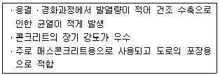
- 실리카시멘트
- 알루미나시멘트
- 고로시멘트
- 중용열 포틀랜드시멘트
(정답률: 73%)
50. CPM과 비교한 PERT의 특성으로 부적합한 것은?
- PERT는 최소비용에 대한 도입이론이 없다.
- CPM과 PERT 모두 공사전체의 파악을 용이하게 한다.
- PERT는 소요시간 추정을 위하여 1점 추정을 한다.
- PERT는 경험이 없는 건설공사나 비반복사업에 유리하다.
(정답률: 58%)
51. 어떤 배수구역의 면적 비율이 주거지 40%, 도로 30%, 녹지 30%라고 가정하고 그 유출계수를 각각 순서대로 0.90, 0.80, 0.10이라고 한다면, 이 구역의 합리적인 평균 유출계수는?
- 0.60
- 0.63
- 0.80
- 0.83
(정답률: 64%)
52. 콘크리트 시공에서 골재의 습윤상태에 관하 것으로 콘크리트 반죽시 물량(水量)이 골재에 의해 증감되지 않는 이상적인 상태 또는 골재입자의 표면에 물은 없으나 내부의 공극에는 물이 꽉 차 있는 상태는?
- 절대건조상태
- 습윤상태
- 노건상태(爐乾狀態)
- 표면건조 포화상태
(정답률: 78%)
53. 다음 중 일반적인 옹벽의 설계과정에서 고려해야 되는 사항이 아닌 것은?
- 옹벽 각 부재의 구조체를 설계한다.
- 지형의 조사, 지반의 토질조사 및 시험을 한다.
- 뒷채움 흙의 경우 배수시설은 고려하지 않고 구조물에서 결정한다.
- 옹벽의 자중, 옹벽에 작용하는 토압 및 뒷채움 흙의 재하중을 계산한다.
(정답률: 84%)
54. 옹벽의 종류 중 옹벽배면 기초저판 위의 흙 무게를 보강하여 안정성을 높인 옹벽의 구조에 해당하지 않는 것은?
- 캔틸레버 옹벽
- 역T형 옹벽
- L형 옹벽
- 중력식 옹벽
(정답률: 56%)
55. 다음의 도형과 같은 현장토공에서 절토량은 얼마인가? (단, 각점의 숫자는 절토 깊이를 나타내며, 토량 계산은 구형(矩形) 단면법에 의한다. 사각형 하나의 넓이는 5m2이다.)
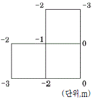
- 11.25m3
- 17m3
- 21.25m3
- 85m3
(정답률: 57%)
56. 콘크리트의 특징에 관한 설명 중 옳지 않은 것은?
- 보강이 어렵고 철거하기 힘들다.
- 임의의 크기의 구조물을 형성할 수 있다.
- 압축강도에 비해 인장강도와 휨강도가 비교적 크다.
- 유지비가 목재 등에 비해 상대적으로 저렴하다.
(정답률: 79%)
57. 흙의 다짐효과에 대한 설명 중 틀린 것은?
- 흙을 다지면 공극이 작아지고 투수성이 저하된다.
- 다짐건조밀도는 전압횟수에 따라 증가하지만 한계에 도달하면 거의 증가가 없다.
- 입도배합이 좋은 흙에서는 높을 건조밀도를 얻을 수 있다.
- 최대건조밀도는 모래질 흙일수록 낮고 점토일수록 높다.
(정답률: 63%)
58. 강(鋼)과 비교한 알루미늄의 특징에 대한 내용 중 옳지 않은 것은?
- 강도가 작다.
- 비중이 작다.
- 열팽창률이 작다.
- 전기 전도율이 높다.
(정답률: 55%)
59. 포틀랜드시멘트의 화학성분 중 가장 많은 부분을 차지하는 것은?
- 실리카(Sio2)
- 산화철(Fe2O3)
- 알루미나(Al2O3)
- 석회(CaO)
(정답률: 72%)
60. 유기질계 토양개량제로서 부적합한 것은?
- 토탄
- 피트모스
- 바크퇴비
- 벤토나이트
(정답률: 56%)
4과목: 조경관리
61. 강도율이 1.98인 조경시설물 생산 사업장에서 한 근로자가 평생 근무한다면 이 근로자는 재해로 인해 며칠의 근로손실일수가 발생하겠는가? (단, 근로자의 평생근무시간은 100,000시간이라 한다.)
- 198일
- 216일
- 254일
- 300일
(정답률: 64%)
62. 다음 중 하천 생태복원 관리와 관련된 설명 중 ( )안에 들어 갈 수 없는 것은?
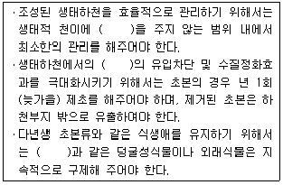
- 환삼덩굴
- 교란
- 비점오염원
- 치수안정성
(정답률: 68%)
63. 수목의 생장이 왕성할 때 하계전정(하기전정,夏期剪定)을 설명한 것 중 옳지 않은 것은?
- 밀생된 부분을 솎아낸다.
- 굵은 가지 1~2개 솎아낸다.
- 도장지를 잘라 내는 정도로 한다.
- 목적대로 가벼운 전정을 2~3회 나누어 실시한다.
(정답률: 57%)
64. 분제의 물리적인 성질로서 가장 거리가 먼 것은?
- 고착성(Tenacity)
- 토분성(Dustibility)
- 부착성(Adhesiveness)
- 현수성(Suspensibility)
(정답률: 72%)
65. 잔디깎기를 실시하는 목적으로 가장 거리가 먼 것은?
- 잔디의 생육면을 평탄하게 한다.
- 통풍이 잘 되므로 병해충을 방제한다.
- 잔디의 분얼이 억제되며 생장이 정지된다.
- 정기적으로 깎으므로 잡초발생이 억제된다.
(정답률: 75%)
66. 토사포장 방법에 대한 설명 중 맞지 않는 것은?
- 지반위에 자갈, 모래, 점토를 섞은 혼합물(노면자갈)을 30~50㎝ 깔고 다진다.
- 노면자갈의 최대 굵기가 30~50mm일 때 55~70%의 혼합비율로 한다.
- 점토질은 10%이하이고, 모래질은 30%이하이면 좋다.
- 노면자갈의 두께는 노면 총 두께의 1/5이하이다.
(정답률: 53%)
67. 수목을 식재한 후 일반적으로 지주목을 설치한다. 다음은 지주목의 필요성에 대한 설명으로 옳지 않은 것은?
- 수고 생장에 도움을 준다.
- 도시미관을 위해 필수적이다.
- 바람에 의한 피해를 줄일 수 있다.
- 수간의 굵기가 균일하게 생육할 수 있도록 해준다.
(정답률: 76%)
68. 다음 중「설치하자」에 의한 사고로 볼 수 없는 것은?
- 시설의 구조 자체의 결함에 의한 사고
- 시설 설치의 미비에 의한 사고
- 시설 배치의 미비에 의한 사고
- 시설의 노후, 파손에 의한 사고
(정답률: 71%)
69. 주민참가에 의하여 행하여 질 수 있는 공원관리활동 내용이 아닌 것은?
- 청소
- 기술자문
- 공원관리에 대한 제안
- 어린이의 놀이지도
(정답률: 77%)
70. 다음 중 이용관리의 방법이 아닌 것은?
- 이용지도
- 토양시비관리
- 안전관리
- 팸플릿 작성 및 포스터의 이용
(정답률: 68%)
71. 방동사니류 잡초에 해당하지 않는 것은?
- 올미
- 올방개
- 올챙이고랭이
- 바람하늘지기
(정답률: 54%)
72. 수목에 비료를 주는 방법 중 작업방법이 비교적 신속하고, 비료의 유실량(流失量)이 많다. 특히 토양 내로의 이동속도가 비교적 느린 양분에 적용하지 않는 것이 좋다. 즉 질소시비의 경우에는 이 방법이 좋으나, 인(P)이나 칼륨(K)에는 좋지 않은 시비방법은?
- 표토시비법
- 천공시비법
- 엽면시비법
- 수간주사법
(정답률: 60%)
73. 일반적으로 시설물별 내용 년수로 옳은 것은?
- 벤치(플라스틱) : 5년
- 시계탑 : 10년
- 담장(로프 울타리) : 20년
- 테니스 코트(클레이코드) : 10년
(정답률: 58%)
74. 아스팔트 포장의 보수 및 시공 공법이 아닌 것은?
- 패칭공법
- 표면충전처리공법
- 표면실링공법
- 덧씌우기공법
(정답률: 45%)
75. 다음 중 잎을 가해하는 식엽성 해충으로 분류되는 것은?
- 박쥐나방
- 도토리거위벌레
- 솔수염하늘소
- 대벌레
(정답률: 58%)
76. 공사 기성고(旣成고) 곡선 중 원활하게 진행하고자 할 땐 어느 곡선이 가장 적절한가?
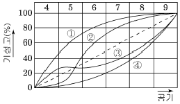
- 1
- 2
- 3
- 4
(정답률: 58%)
77. 비탈면 보호공의 유지관리 항목 중에서 특히 방책기 중의 굴공, 낙석 또는 토사의 퇴적, 기초보의 풍화 또는 붕괴 들을 주로 점검해야 하는 비탈면 보호공은?
- 편책공
- 비탈면돌망태공
- 낙석방지망공
- 낙성방지책공
(정답률: 50%)
78. 목재시설물의 관리 지침 중 적당하지 않은 것은?
- 원목은 옹이가 없는 것이 좋다.
- 썩는 것을 방지하기 위해 방부처리를 한다.
- 표면 방부처리 후 대패질을 부드럽게 만든다.
- 수축 및 균열을 방지하기 위해 충분히 건조시킨다.
(정답률: 72%)
79. 운영관리 고유의 업무 영역으로 분류하기 어려운 것은?
- 예산ㆍ재무 제도
- 조직관리
- 월동관리
- 재산관리
(정답률: 64%)
80. 수병치료를 위한 수간주사법에 대한 설명이 옳은 것은?
- 청명한 날의 낮 시간에 실시한다.
- 수간주사액은 주로 살균제 성분이다.
- 빗자루병의 치료에는 효과가 없다.
- 수피 두께 정도까지 바늘을 찌른다.
(정답률: 56%)